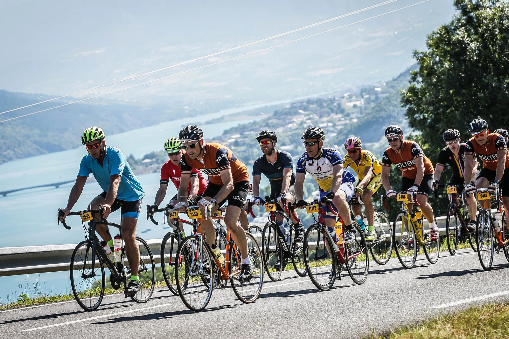
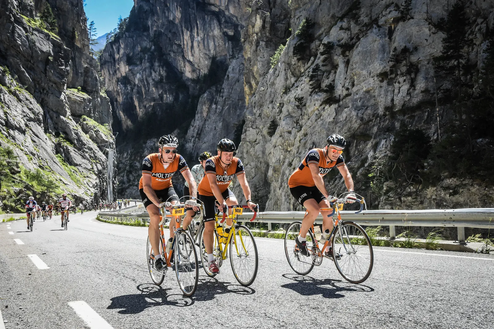

L’Etape du Tour

4 af de mest formstærke ryttere fra Squadra Molteni var udtaget til at køre L’Etape du Tour – 18. etape af Tour de France: 180 km fra Briancon til Col d’Izoard.
Grane Maaløe og Jens Bojesen var taget på højedetræningslejr i de Italienske Alper 14 dage inden løbet – og var i storform. Kasper Sørensen havde kun nået én enkelt træningstur i området inden løbet, før han fornemmede, at topformen var dér. Kaptajn Bjørnsteen kom direkte hjemmefra, og havde storformen med i bagagen.
Starten – kontrolleret kaos
15.000 ryttere skulle sendes afsted indenfor to timer. Det er noget af en logistisk opgave. Men ASO-organisationen kan deres kram. Franske gendarmer og et hav af frivillige styrede kaoset i Briancon med hård hånd, og guidede rytterne hen i de rigtige startområder. Ca. 10 min. før start lykkedes det Squadra Molteni’s mandskab at finde hinanden; Det Orange Eksprestog var klar til start!
50 km i Det Orange Eksprestog


Kort efter start, hvor bla. Djævlen Didi var hyret til at hoppe og danse, gik Eksprestoget i formation. Kaptajn Bjørnsteen og Grane Wunderbein trak afsted. De lagde en fart på den pæne side af 40 km/t – og overhalede det ene carbonfelt efter det andet. Efter små 50 km. var det tid til at hælde vand på – og lommerne blev fyldt med tørret frugt fransk og abrikos-vingummier.
Farten havde været høj, og Squadra Molteni besluttede sig for at skrue et gear ned. Rutens første udfordring ventede lige om hjørnet.
Kategori 3 på den store klinge
Efter depotet stod menuen på en lille aperitif; dagens første bjerg. Kategori 3 bjerget Cote des Demoiselles (3,9 km á 5,2%). Stigningen, som var på en stor hovedvej, startede blidt og kunne holdes et godt stykke på stor klinge. Men godt halvvejs måtte vi dog ned på den lille 42 tands klinge.
Op og ned i det ”franske flade”
Efter Cote des Demoiselles’ nedkørsel stødte vi på begrebet ”falskt fladt” – fra nu kendt som fransk fladt. Det så ud som om, at vejen meget af tiden var flad – men det var den ingenlunde. De næste 50 km. steg ruten godt 700 meter. Altså en 1,5% i snit. Heldigvis havde vi en god medvind.
Alle fire ryttere var stadig ved godt mod, og tog fat på stigningen. Solen havde efterhånden fået godt fat, og temperaturen nærmede sig de 30 grader.


Col de Vars
Efter 121 km. var der dækket op til dagens forret: Col de Vars (9,3 km á 7,5%). ASO har kategoriseret stigningen til en kategori 1, men det er en led satan, der i dagens anledning lå i stegende hede.
Kasper var i krise i starten, men fandt ny luft halvvejs. Grane var flyvende, og Jens der halvvejs var lidt i krise, åd sig selv og koblede sig på Grane. Bjørnsteen lå sammen med Grane den første halvdel af stigningen, men kaptajnen måtte med små 200 m til toppen af cyklen og tanke vand i en bjergbæk.
Col d’Izoard
Efter en god og lang nedkørsel fra Col de Vars fulgte godt 15 km. ”falskt fladt” i en slugt med god medvind – men tilgengæld skruet helt op for varmen.
Col d’Izoard (14 km á 7,3%) var dagens hovedret efter 167 km. De første 5 km. var nogenlunde – og samtidig en nedtælling til det sidste væskedepot. De sidste 9 km. var frygtlige. Lange stykker på 9-10% i bagende sol – og afslutningsvis nogle lede hylder i et måneagtigt landskab.
Grane var igen flyvende og var første mand fra Squadra Molteni i mål. Han lavede endda en sprint de sidste 200 meter – hvilke resulterede i, at han næsten ikke kunne komme af cyklen i målområdet pga. kramper.
Jens havde haft lidt krise på den første del af bjerget, men kom sig. Med godt 5 km. til toppen kom han op til Bjørnsteen, der havde opgivet at følge Grane.
Jens fortsatte stødt mod toppen – og Bjørnsteen måtte slippe en smule, for at undgå Kramper. Izoard var hård ved Kasper. Han havde det hårdt hele vejen – og de sidste 5 km var ren overlevelse. Men han kom op. Et par halvfede englændere påstår at have set Kasper være af og trække, men det er rygter, og kan blankt afvises.
Epilog
l’Etape du Tour er et kæmpe setup. ASO spiller virkelig med musklerne. De afspærrer alle veje, og har kørende service på hele ruten. Depoterne er et kaos. Tilskuerne råber og skriger, og giver det hele et stærkt strejf af Tour de France stemning.
Efter målet på Izoard ventede 20 km. nedkørsel til Village, hvor der kunne hentes en bøtte med pasta og tørt brød.